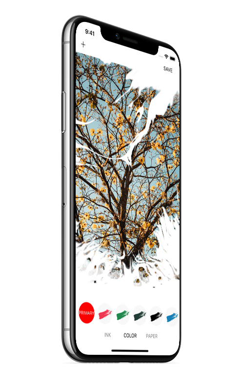

When ink meets photo, light and shadow combine with ink to form the visual effect of “image in ink”.
[DESIGN]
“Preserve the real image of the photograph.
Add different strokes of ink.
A visual effect of ‘Ink Photo’ appears.
Then stained with ancient Chinese colors.
An antique photograph is presented instantly on rice paper.”
That's what “Ink Photo” was designed for.
[FUNCTION]
-32 types of ink strokes.
-9 ancient Chinese colors.
-7 kinds of paper substrates
